Entri is the future of product support. It easily puts you in control of what makes life easy and fun, by keeping your stuff in check and your life in balance. The Enctri app is a single place to turn to help you use, maintain, and fix everything you own. It’s the key to connecting you to an ecosystem of content, parts, and people, providing the support you need for everything you own.
There were several idea’s and also several inspirations that led to each of these logo’s. Since it would take a long time to explain why each logo was taken into consideraton. I will explain what made me come up with the final logo and the inspiration behind it.
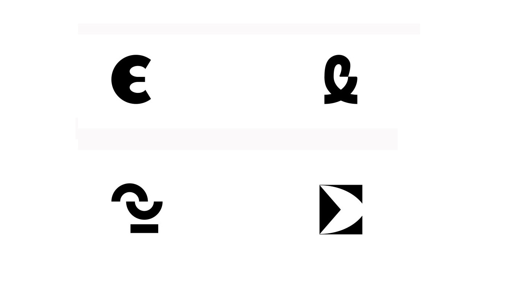The Idea was to implement the ON/OFF symbol into the logo which is represented by 0 and 1 but because Enctri fixes broken electronics.So the idea was to also break the O and 1 creating a logo.To achieve this I had looked
into many different variaions and this one looked to tick all the boxes being memorable and simple at the same time.
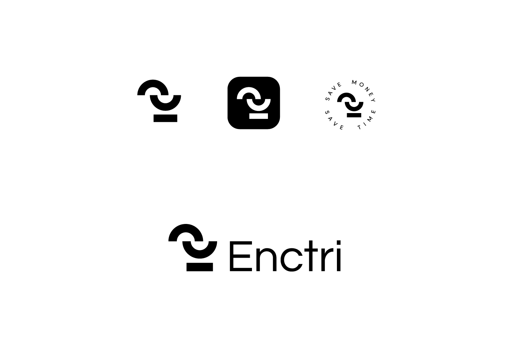
We wanted to come with colors that will POP and also they all should work together as well.
The main colors are orange
and red. While both yellow
and blue are used as
accents throught out the
brandind of Enctri.
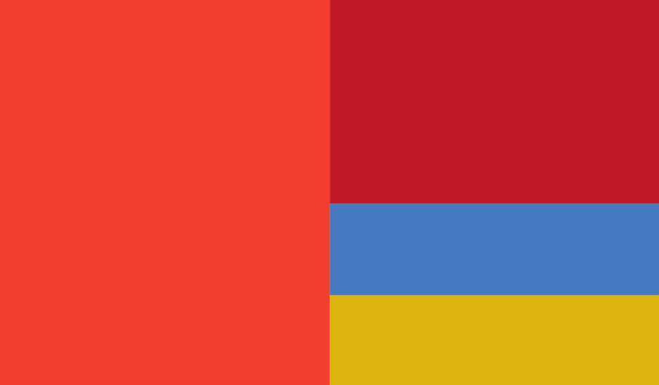
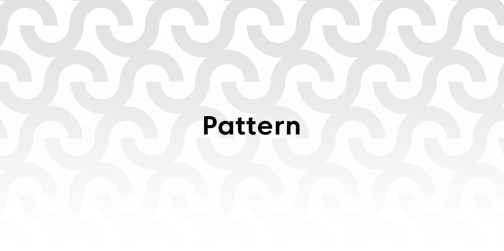
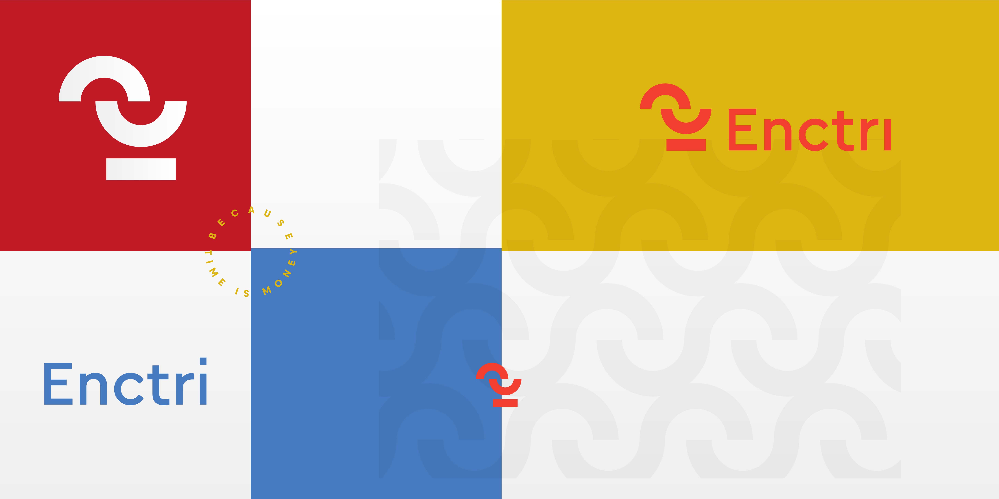
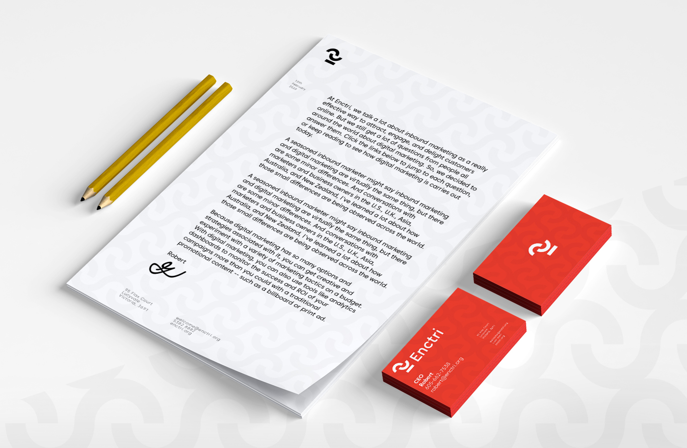
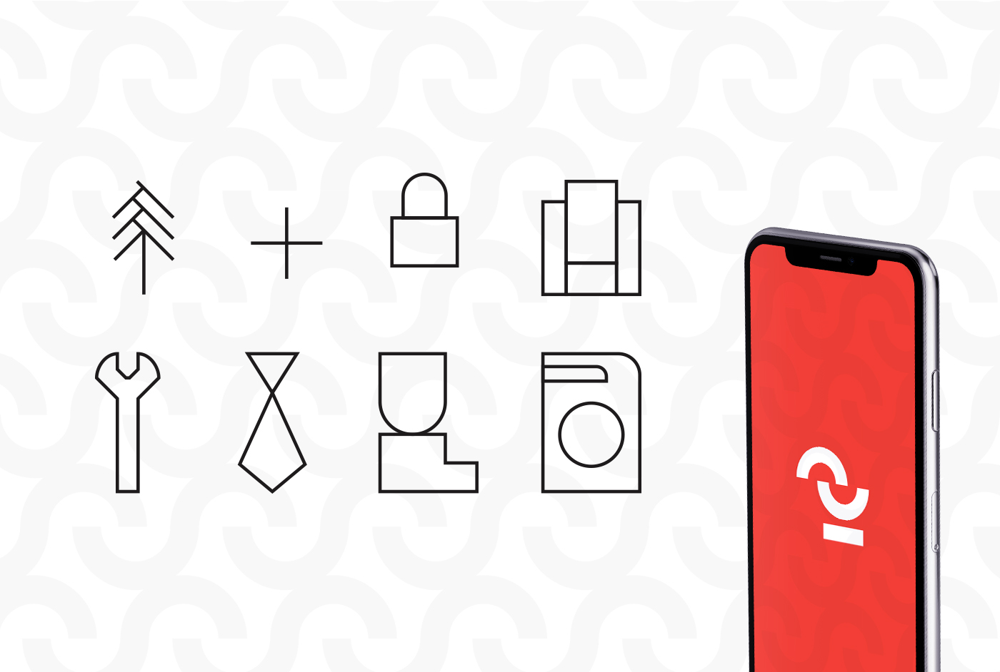
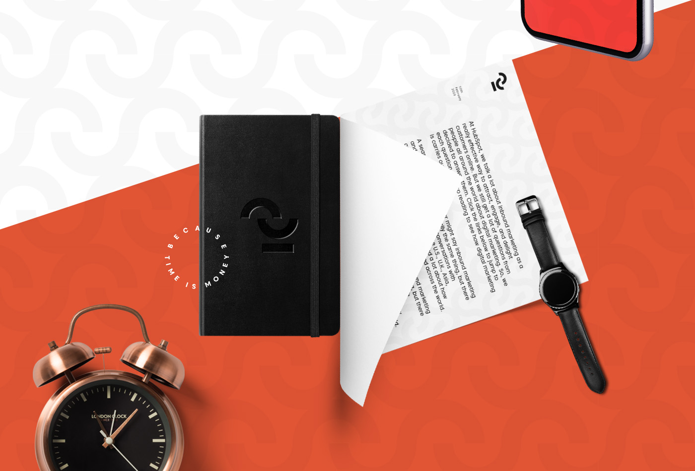
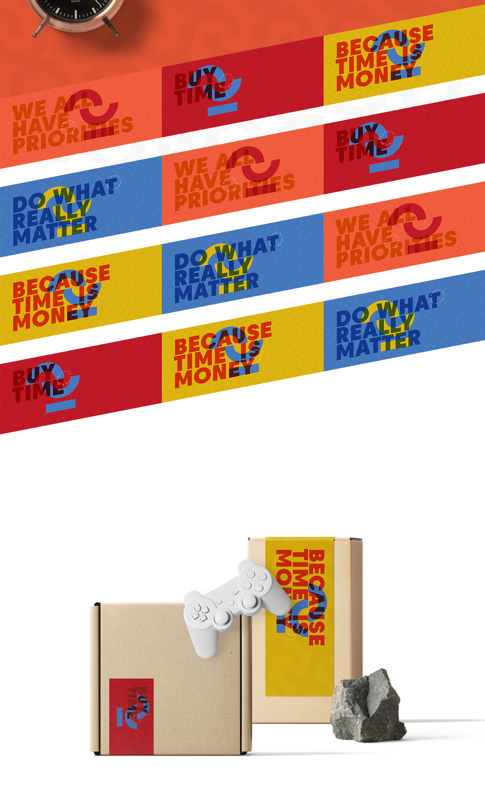
Initially there was no plan to
develop a packaging style but later it came up.We did not want a full fledged packaging design but something that would not cost much but still be recognizable with the current branding So the idea was to create a series of stickers that will help achieve this objective.The reason why I went with a sticker design is so that it is not that expensive and also there would not be a need for full fledged package design as well.
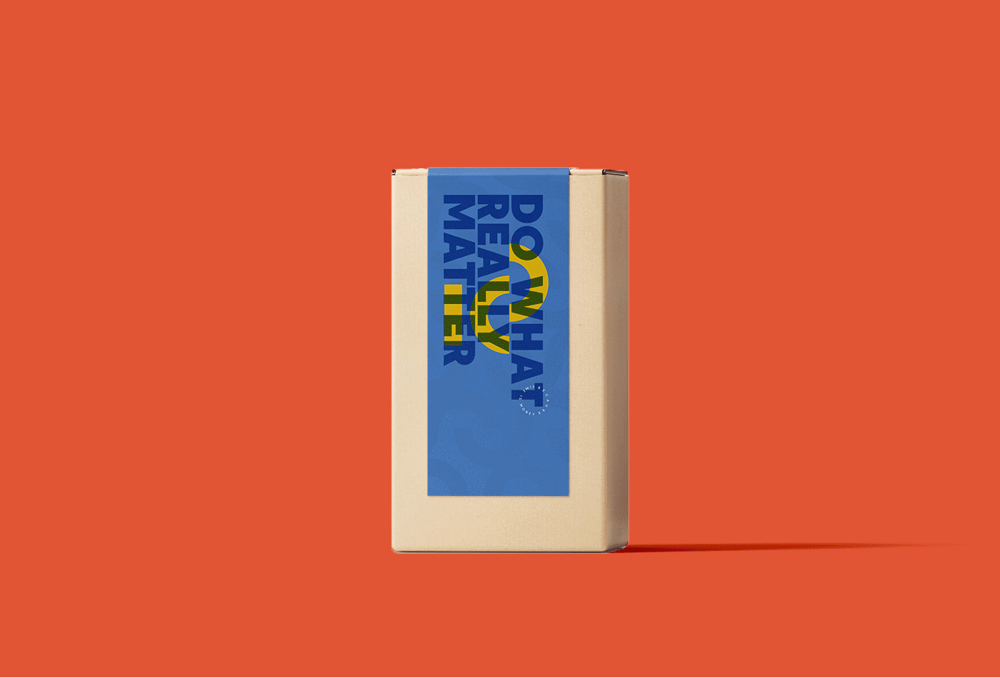
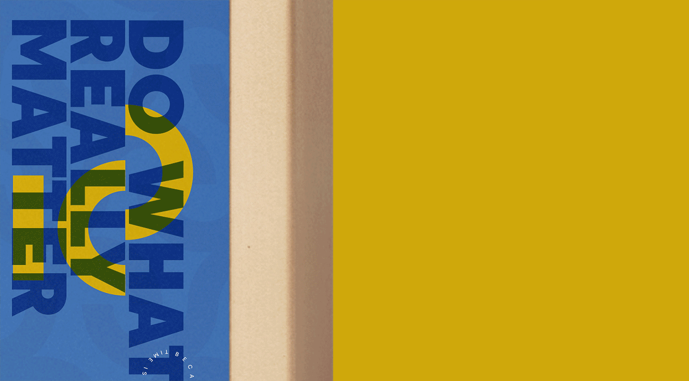
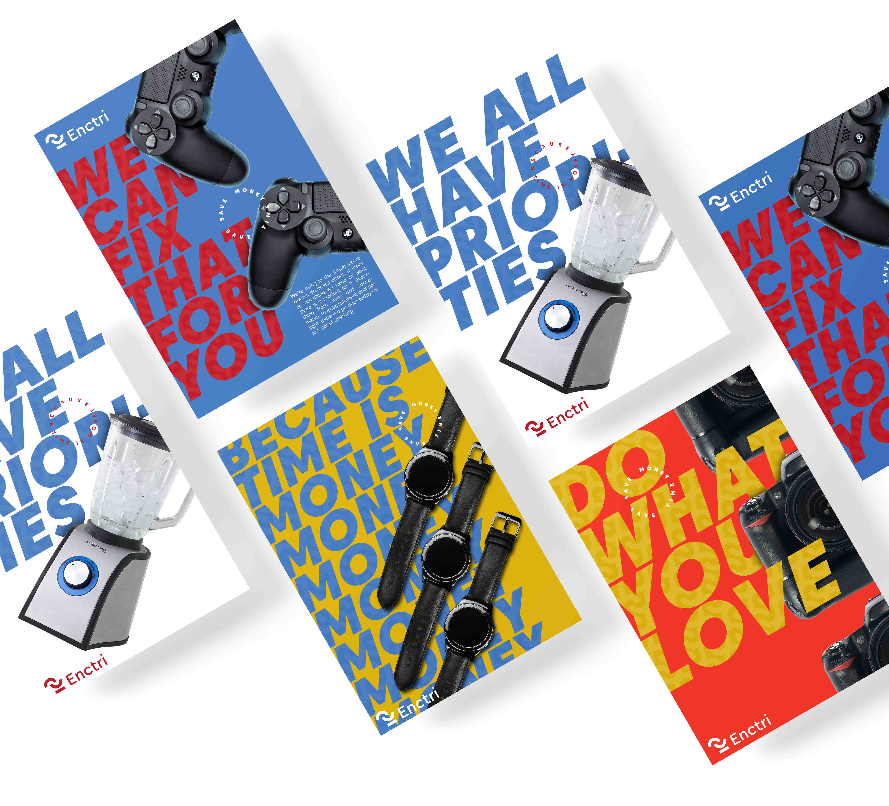
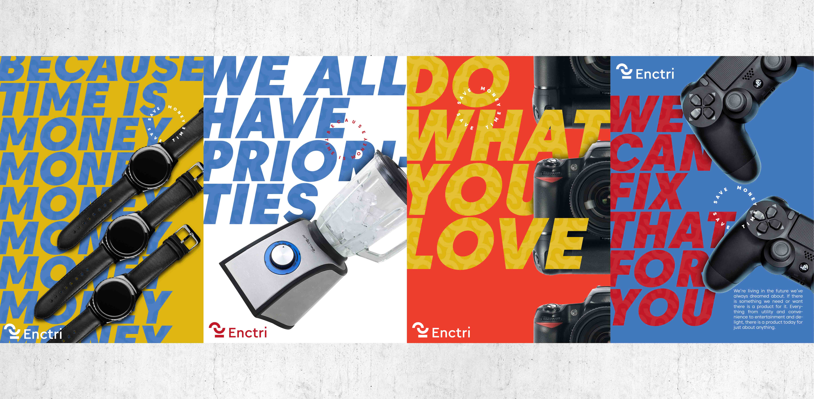